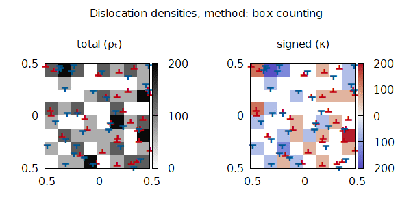
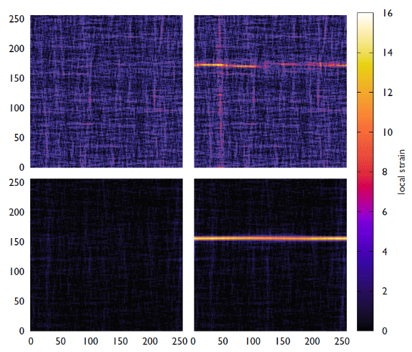
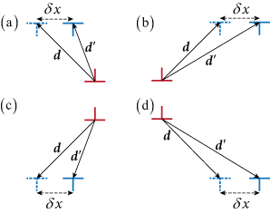
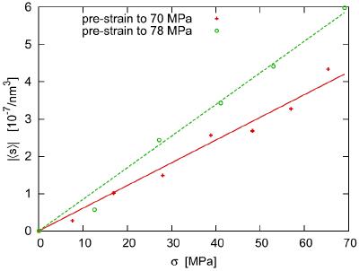

As a physicist I do scientific research that helps to make the world better. Every new topic force me to study and explore some new techniques and methods that makes the investigation even more interesting.
Active interests
Every project includes several tasks and subtasks therefore I try to focus one project at a time, and switch between them only couple of times a month at maximum.
Dislocation patterning in DDD
Although in experimental physics the phenomenon of dislocation patterning is well known for decades, there are still no N-body simulations out there showing similar behavior.
Why N-body dislocation simulations don't show dislocation patterning?
How could we detect if there were any?
How could we make N-body simulations to produce dislocation patterning?
In my research I collected couple of methods used in this field to evaluate dislocation configurations and also implemented two new ones. The evaluation on randomized and patternized dislocation configurations showed the difference and effectiveness of the different evaluation techniques.
With a sensitive enough evaluation method one can show that discrete dislocation systems indeed exhibit pattern formation and the characteristic length scales with the average dislocation spacing instead of the simulation space for large enough system sizes.

Calculating dislocation densities from a discrete distribution of dislocations with the method called box counting. This method is easy to understand and to implement. The resolution is 8×8 and 32 positive and negative dislocations are simulated.
Dislocation patterning and solute atoms in CDDD
The mergence of dislocation patterns on a continuum level can be shown with a minimalistic 2D single slip system, the characteristic scale of patterns is well predicted and has been numerically investigated already. How could one incorporate solute atoms into the picture? One can express the coupled partial differential equations for dislocation densities and for the non-pinned solute atom density, including their self and cross interaction. The resulting coupled differential equations are complicated even in their linearized form. The number of parameters is also high, and it makes the investigation not simply difficult but also lengthy.
Previous works
There are research topics I were involved in before, but I put no more focus on these fields.
Strain localisation
In my work published in Disorder is good for you ... a model was proposed for the deformation of a locally disordered but macroscopically
homogeneous material which shows softening during plastic deformation. A measure for the internal structural disorder was introduced and its role in strain localisation was investigated with respect to the formation of macroscopic shear bands in such materials. The study has shown strong positive effect of increased heterogeneity and randomness on the deformation properties.
Plastic strain patterns at the highest external stress, right before the onset of softening (left), and at the end of the simulation, at system failure (right) at higher disorder (up) and lower disorder (down).
Asymmetric X-ray line broadening
In my work published in Asymmetric X-ray line broadening ... I experimentally investigated the phenomenon of asymmetric X-ray line broadening caused by dislocation
polarization. In the experiments I performed, I used single Cu crystals and put external stress on the samples while I was measuring their X-ray diffraction pattern with high angular precision.
Four possible dipole configurations (a–d) under external shear change their polarization.
The dislocation polarization is proportional to the external stress and causes the asymmetricity of the X-ray peaks. Therefore, by measuring the X-ray diffraction one can tell the average polarization of the dislocation systems where the constant factor can be called as an effective susceptibility for dislocation systems.

The polarization ⟨|s|⟩ as a function of the external stress for two different pre-deformation levels.
Publications in peer reviwed journals
Wu, RH ; Tüzes, D ; Ispanovity, PD ; Groma, I ; Hochrainer, T ; Zaiser, M
Instability of dislocation fluxes in a single slip: Deterministic and stochastic models of dislocation patterning PHYSICAL REVIEW B 98 : 5 Paper: 054110 , 15 p. (2018); arxiv PDF
István, Hegyi Ádám ; Dusán, Ispánovity Péter ; Knapek, Michal ; Tüzes, Dániel ; Máthis, Krisztián ; Chmelík, František ; Dankházi, Zoltán ; Varga, Gábor ; Groma, István
Micron-Scale Deformation: A Coupled In Situ Study of Strain Bursts and Acoustic Emission MICROSCOPY AND MICROANALYSIS 23 : 6 pp. 1076-1081. , 6 p. (2017); arxiv PDF